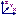

Display tab (Drawing View Properties dialog box)
Defines the part display, edge display overrides, and section view options of part, sheet metal, and assembly drawing views.
You also can show and hide elements used to create the model, such as construction elements, coordinate systems, the center of mass, sketches, reference planes, and centerlines.
- Filter drawing view display list to display only shown components
-
Makes the parts list more compact by not listing parts that are hidden in the selected drawing view. These may be parts for which you cleared the Show check box, or parts which are hidden by a configuration file.
-
When selected, compacts the list of parts in the assembly tree so that only those that are set to be shown in the drawing view are listed.
-
When cleared, restores the full list of all of the parts in the assembly drawing view.
-
- Clear Edge Overrides
-
When set, specifies that edge (Edge Painter and Hide Edge) overrides are cleared for the drawing view when you click OK.
 Drawing View Display Defaults
Drawing View Display Defaults-
Displays the Drawing View Display Defaults dialog box.
 Parts List Options
Parts List Options-
Specifies whether to list one or more categories of reference geometry—constructions, coordinate systems, sketches, reference planes, or centerlines—in the Parts List. When reference geometry is in the Parts List, it is available for display in the drawing view.
- Highlight Selection
-
Highlights the graphics for the selected model(s) in the drawing view.
- Cut segments
-
Lists the segments in the cutting plane line used to create a section or revolved section view, for example, Cut Segment 1, Cut Segment 2, Cut Segment 3.
Note:For multi-segment lines, you can use the Highlight Selection button to identify which line segment corresponds to which cut in the part geometry.
- Alternate positions
-
Lists the member names shown in an alternate position assembly drawing view. One member is labeled the (Primary) member; all other members represent alternate positions of the primary member.
You can select a member from the Alternate positions list, and then select a part in the Parts list, to adjust the show, hide, fill, edge, and style for individual parts as they are displayed in different positions in the drawing view.
Note:You can add and remove members in the list, and change their position designations, using the Set Primary and Alternate Positions command on the drawing view shortcut menu.
- Parts list
-
Lists the drawing view objects in a tree structure. You can select objects in the list and then change their display options using the shortcut menu or using other options on the Display tab.
The following icons may appear in the Parts List:
Icon
Description
Part
Weld bead
Construction
Sketch

Coordinate system/center-of-mass coordinate system
Reference plane
Flow line
Tube centerline
Bend centerline
Pipe segment
Pipe fitting
Pipe run
Assembly
Harness
Bundle
Cable
Wire
Indicates section view. For example:
Indicates no fill. For example:
Indicates reference. For example:

Indicates an error. Check to be sure the associative model is present and contains no invalid geometry.
Note:If the
appears next to a wire harness conductor, the font color for the conductor properties
turns red and an error message appears at the bottom of the conductor properties.Indicates a hidden component.
Indicates indeterminate status (multiple selections, for example).
Some icons can appear simultaneously. For example, indicates a reference part in a section view.
If a section view contains cut ribs, you can fine-tune the hatching display by selecting the Override Rib Hatching command on its shortcut menu. To learn how to do this, see the Help topic, Set rib hatching in section views.
- Query Selected Items
-
Contains controls for creating and manipulating queries. You can use a query to hide components in a drawing view.
- New Query
-
Displays the Query dialog box to allow you to create a new query.
- Query list
-
Lists all available queries.
- Edit Query
-
Displays the Query dialog box to allow you to edit the query shown in the query list.
- Execute Query
-
Executes the query shown in the query list.
- Selected Part(s) Display
-
- Restore default display settings
-
Restores default display settings, as specified in the Drawing View Display Defaults dialog box.
- Show
-
Displays in the drawing view the parts you select in the Parts List. On an assembly drawing this option can be applied to individual parts in the drawing view.
- Derive "Display as Reference" from Assembly
-
Specifies that the occurrence properties defined in the assembly document determine whether the occurrence is displayed as a reference part.
You can use the Occurrence Properties command on the Assembly PathFinder shortcut menu to open the Occurrence Properties dialog box. The column labeled Draft Reference must be set to Yes to specify that an assembly occurrence is displayed as a reference part in a drawing.
- Display as Reference
-
Displays the selected parts as reference parts. Selecting this option overrides the setting in the assembly occurrence.
Note:-
You can use the Model Display tab in the Drawing View Properties dialog box to turn reference part transparency on or off.
-
You can use the Edge Display tab (Solid Edge Options dialog box) to specify the reference part edge display style you want to use.
-
- Section
-
Sections the selected parts. On an assembly drawing this option can be applied to individual parts in the drawing view if the drawing view is a section view.
- Cut hardware
-
Specifies whether the selected hardware parts—such as nuts, bolts, and washers—are cut when intersected by the cutting plane in section views. This option is only available for section views of assemblies.
See the help topic, Specify hardware parts.
- Show fill style
-
Specifies a fill style for the selected parts.
- Derive from part
-
Show the fill style used in the part.
- Spacing
-
For a section or broken out section view:
-
Displays the spacing value of the currently applied hatch pattern.
If any spacing values of selected items are different, then the value is indeterminate. The Spacing box displays a blank.
-
Overrides the spacing in the hatch pattern for one or more parts selected from the Parts list tree on the Display tab.
-
- Angle
-
For a section or broken out section view:
-
Displays the angle value of the currently applied hatch pattern.
If any angle values of selected items are different, then the value is indeterminate. The Angle box displays a blank.
-
Overrides the angle in the hatch pattern for one or more parts selected from the Parts list tree on the Display tab.
-
- Visible edge style
-
Sets the style for visible edges. On an assembly drawing this option can be applied to individual parts in the drawing view. You can apply different styles to different parts in the assembly.
- Hidden edge style
-
Sets the style for hidden edges. On an assembly drawing this option can be applied to individual parts in the drawing view. You can apply different styles to different parts in the assembly.
Note:When you change the hidden edge display in a drawing view, you can use Ctrl+Shift+Update Views to refresh the drawing view.
- Show edges hidden by other parts
-
Displays edges hidden by other parts in the drawing view. The edges are displayed using the hidden edge line style. This option applies to the entire drawing view.
- Show hidden-tangent edges
-
Displays hidden-tangent edges, if they were created in the drawing view. These edges are in addition to other hidden edges. The edges are displayed using the hidden edge line style.
Use this option to:
-
Show the lines between rounds and tapered faces, which do not have a sharp edge.
-
Show the external edges on the back side of a cast part.
Note:If this results in too many hidden-tangent edges being visible, you can use these commands to adjust them:
-
- Tangent edge style
-
Sets the style for tangent edges. On an assembly drawing this option can be applied to individual parts in the drawing view. You can apply different styles to different parts in the assembly.
- Tube centerline style
-
Sets the style for tube centerlines. On an assembly drawing this option can be applied to individual parts in the drawing view. You can apply different styles to different parts in the assembly.
- .cfg, PMI model view, or Zone
-
Lists the names of available assembly display configurations, 3D PMI model views, and zones that can be used to generate a drawing view.
-
– Indicates an assembly display configuration.
-
 – Indicates a 3D PMI model view.
– Indicates a 3D PMI model view. -
 – Indicates a zone.
– Indicates a zone.
- Check
-
For legacy files that contain display configurations, checks the current display configuration version against the version when the drawing view was last updated, and sets the view out-of-date if the version is different.
Note:-
Alternatively, you can set an automatic checking option for assembly display configuration changes across all drawing views. On the General page of the Solid Edge Options dialog box, set the assembly configuration changes make drawing views out-of-date in this draft file option.
-
The Match option, below, also must be set to enable the automatic display configuration check.
-
- Match
-
Controls whether show and hide part settings in the drawing view tree structure match the show and hide settings within the selected configuration, zone, or PMI model view.
When checked, all elements are shown.
-
- Use configuration or model view show/hide states for sketch, construction, etc.
-
Specifies how an assembly display configuration or PMI model view selected from the .cfg, PMI model view, or Zone list is used in the selected drawing view.
-
When checked, specifies that drawing views show all of the model objects and design elements that are in the selected assembly display configuration or PMI model view. In addition to the solid design bodies, you can show surfaces, curves, centerlines, sketches, coordinate systems, and reference planes.
-
When unchecked, specifies that drawing views only show the design bodies in the assembly display configuration.
Example:To reduce complexity in a drawing, you can use this option to display tube, pipe, or frame centerlines without displaying the solid tubes, pipes, or frames.
-